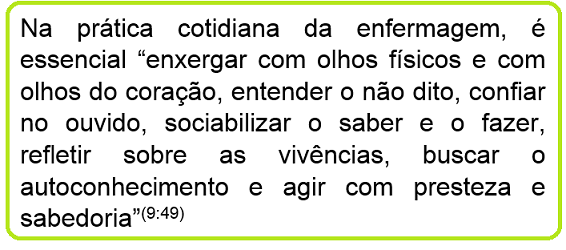

Objetivo de aprendizagem: Compreender o conceito e a importância da Sistematização da Assistência de Enfermagem.
Sistematizar: que palavra é essa?
v.t. Reunir em sistema; reduzir a um corpo de doutrina – Dicionário Aurélio.
Sistematização pressupõe a organização de elementos dinamicamente inter-relacionados, ou seja, uma sequência de passos para o alcance de um objetivo.
Quando pensamos em sistematização, logo lembramos de padronização, de organização.
Sistematizar a assistência de enfermagem significa, portanto, utilizar métodos e instrumentos para que os profissionais de enfermagem trabalhem em sistema, ou seja, que tenham uma linguagem comum, uma comunicação eficiente!
Mas para quê ter uma padronização dos métodos e instrumentos da enfermagem?
Reflita um pouco sobre isso ao assistir esse vídeo que nos ensina um pouco sobre os problemas gerados por uma comunicação ineficiente!
A Sistematização da Assistência de Enfermagem (SAE) pode contribuir para superarmos estas problemáticas retratadas no vídeo!
Entende-se que trabalhar em sistema pode proporcionar uma comunicação efetiva e, ainda mais, tornar a enfermagem uma profissão reconhecida pela cientificidade de seus saberes e práticas, pois a SAE possibilita organizar as condições objetivas e subjetivas do trabalho de enfermagem.

Diante deste conceito, defende-se que a SAE deve ser entendida “não somente como um modo de fazer, mas como um modo de pensar a prática assistencial" (1:2).
A SAE não se caracteriza, portanto, como uma “receita teórica” a ser seguida pelos profissionais, com o fim único de alcançar a excelência assistencial.
Tal ferramenta deve ser pensada como um meio de integrar teoria e prática nas ações cotidianas da enfermagem, ultrapassando os simples, embora relevantes, registros das ações.
A SAE possibilita que a equipe de enfermagem organize seu processo de trabalho e, deste modo, diversas pesquisas destacam os benefícios proporcionados pela SAE nas experiências relatadas(2-8):

Outro elemento fundamental proporcionado pela SAE é o resgate do cuidado individualizado, tendo em vista a abordagem holística do usuário e a consequente humanização de seu processo cuidativo. E isto é muito importante, não é mesmo?
A SAE, assim, é reconhecida internacionalmente como um verdadeiro instrumento de revolução da enfermagem!


Que tal refletir um pouco sobre o conceito e objetivos da SAE?
A proposta é que você construa um Infográfico que destaque o seu aprendizado sobre esses dois elementos.
Mas o que é um Infográfico?
Trata-se de um elemento gráfico que combina textos, imagens e formas. Os infográficos ajudam a visualizar um conteúdo e são portanto uma boa solução para significar o aprendizado!
Recentes estudos publicados pela Alltwitter revelaram que a presença de um infográfico em um post aumenta para 834% as chances de ele ser compartilhado. De qualquer forma, quando você criar um infográfico, é importante que possua conhecimento a respeito das principais ferramentas à disposição para produzi-lo.
Por isso, separamos 2 ferramentas para auxiliá-lo nesse processo criativo.
Piktochart
Com designs incríveis e um poderoso editor, o Piktochart funciona como um tutorial que guia você passo a passo na construção do seu infográfico. Mais de 700 mil infográficos já foram criados pelos cerca de 400 mil usuários do aplicativo e, além disso, existem cerca de 100 temas prontos para você escolher. Você pode acessá-lo de graça, ou por meio de uma conta premium, que dá acesso a mais funcionalidades.
Tutorial Piktochart:
Easel.ly
Easel.ly é um aplicativo Beta que ajuda você a criar e exibir seus infográficos. Simples, com uma interface de fácil uso, o aplicativo possibilita que você crie infográficos simplesmente arrastando e soltando elementos que você achar necessário.
Tutorial Easel.ly:
Clicando no nome de cada ferramenta você tem acesso ao link direto para o site que as hospeda!
Bom aprendizado!
Referências:
- Garcia TR, Nóbrega MML. Sistematização da assistência de enfermagem: há acordo sobre o conceito? Rev Eletr Enf. 2009; 11(2):233.
- Andrade JS, Vieira MJ. Prática assistencial de enfermagem: problemas, perspectivas e necessidade de sistematização. Rev Bras Enferm. 2005; 58(3):261-5.
- Amante LN, Rossetto AP, Schneider DG. Sistematização da Assistência de Enfermagem em Unidade de Terapia Intensiva sustentada pela Teoria de Wanda Horta. Rev Esc Enferm USP. 2009; 43(1):54-64.
- França FCV, Kawaguchi IAL, Silva EP, Abrão GA, Uemura H, Alfonso LM, et al. Implementação do diagnóstico de enfermagem na unidade de terapia intensiva e os dificultadores para enfermagem – relato de experiência. Rev Eletr Enf. 2007; 9(2).
- Gonçalves LRR, Nery IS, Nogueira LT, Bonfim ES. O desafio de implantar a sistematização da assistência de enfermagem sob a ótica de discentes. Esc Anna Nery Rev Enferm. 2007; 11(3):459-65.
- Nascimento KC, Backes DS, Koerich MS, Erdmann AL. Sistematização da assistência de enfermagem: vislumbrando um cuidado interativo, complementar e multiprofissional. Rev Esc Enferm USP. 2008; 42(4):643-8.
- Truppel TC, Meier MJ, Calixto RC, Peruzzo SA, Crozeta K. Sistematização da Assistência de Enfermagem em Unidade de Terapia Intensiva. Rev Bras Enferm. 2009; 62(2):221-7.
- Moura ACF, Rabêlo CBM, Sampaio MRFB. Prática profissional e metodologia assistencial dos enfermeiros em hospital filantrópico. Rev Bras Enferm. 2008; 61(4):476-81.
- Silva LWS, Nunes ECDA, Souza DM, Santos CS, Pereira LC. Sistematização da assistência de enfermagem - a práxis no ser-saber-fazer o cuidado. Cogitare Enferm. 2011; 16(3):560-4.